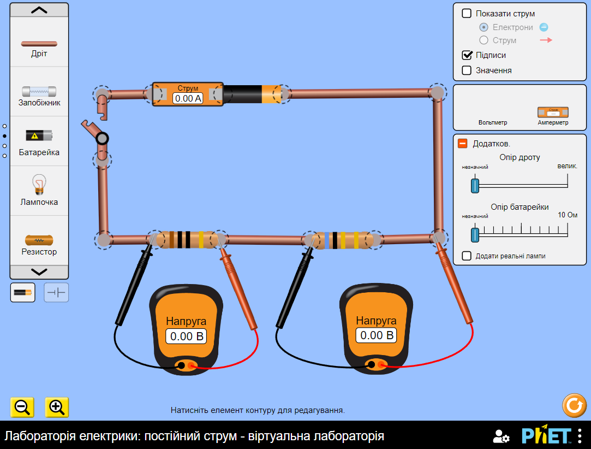
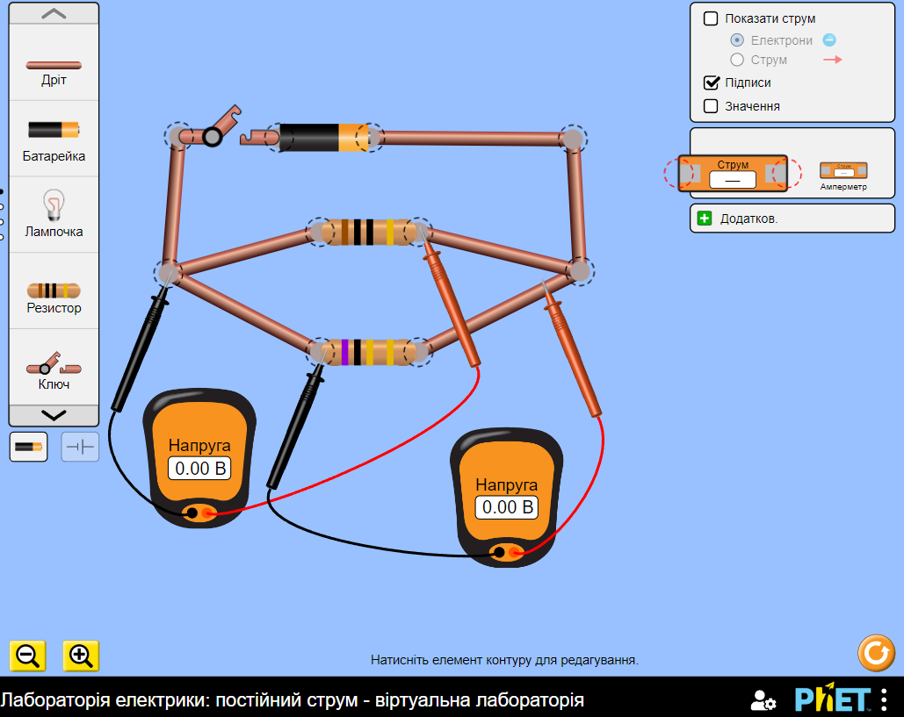
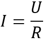
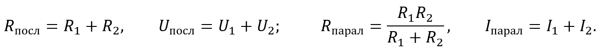
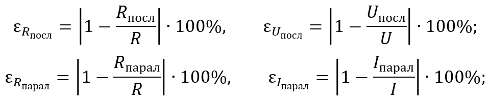

3. Складіть електричне коло за накресленою вами схемою 1. Виберіть різні значення опору
резисторів. Наприклад, 10 Ом та 5 Ом

4. Виміряйте напругу на першому резисторі (U1 ),
на другому резисторі (U2 ),
на обох резисторах разом (U). Накресліть схеми відповідних електричних кіл.
Отримані значення запишіть до таблиці 1.
5. Виміряйте силу струму, увімкнувши амперметр спочатку
між джерелом струму і першим резистором (I1 ),
потім між першим і другим резисторами (I2 ),
а потім між ключем і джерелом струму (I)
Отримані значення запишіть до таблиці 1.
Таблиця 1
Напруга, В
εUпосл, %
Сила струму, А
Опір, Ом
εRпосл, %
U1
U2
U
Uпосл
I1
I2
I
R1
R2
R
Rпосл
Дослід 2
1. Складіть електричне коло за накресленою вами схемою 2. Виберіть різні значення опору
резисторів. Наприклад, 10 Ом та 5 Ом

2. Виміряйте напругу на кожному резисторі (U1,U2 ),
на обох резисторах разом (U). Результати занесіть до таблиці 2
Таблиця 2
Напруга, В
εUпарал, %
Сила струму, А
Опір, Ом
εRпарал, %
U1
U2
U
Uпарал
I1
I2
I
R1
R2
R
Rпарал
3. Виміряйте силу струму в першому резисторі (I1 ),
у другому резисторі (I2 ),
у нерозгалуженій ділянці кола (I). Результати занесіть до таблиці 2
Опрацювання результатів експерименту
1. Користуючись законом Ома для ділянки кола,
для кожного досліду визначте, опір першого резистора (R1 ),
опір другого резистора (R2 ),
загальний опір ділянки кола (R). Результати занесіть до таблиць.

2. Користуючись співвідношеннями для послідовного і паралельного з’єднань споживачів,
для кожного досліду визначте загальний опір ділянки кола,
напругу на ділянці,
силу струму в колі: Результати занесіть до таблиць.

3. Оцініть відносну похибку експериментального підтвердження кожної з рівностей:
Результати занесіть до таблиць.

Аналіз експерименту та його результатів
Проаналізуйте експеримент і його результати. Сформулюйте висновок, у якому зазначте:
1) які досліди ви проводили;
2) які співвідношення були підтверджені;
3) які чинники вплинули на точність результатів експерименту.
Творче завдання
Поміркуйте, який експеримент щодо визначення опору резистора можна провести,
якщо в обладнанні до лабораторної роботи:
1) замість амперметра використати резистор відомого опору;
2) замість вольтметра використати резистор відомого опору.
Запишіть план кожного експерименту.